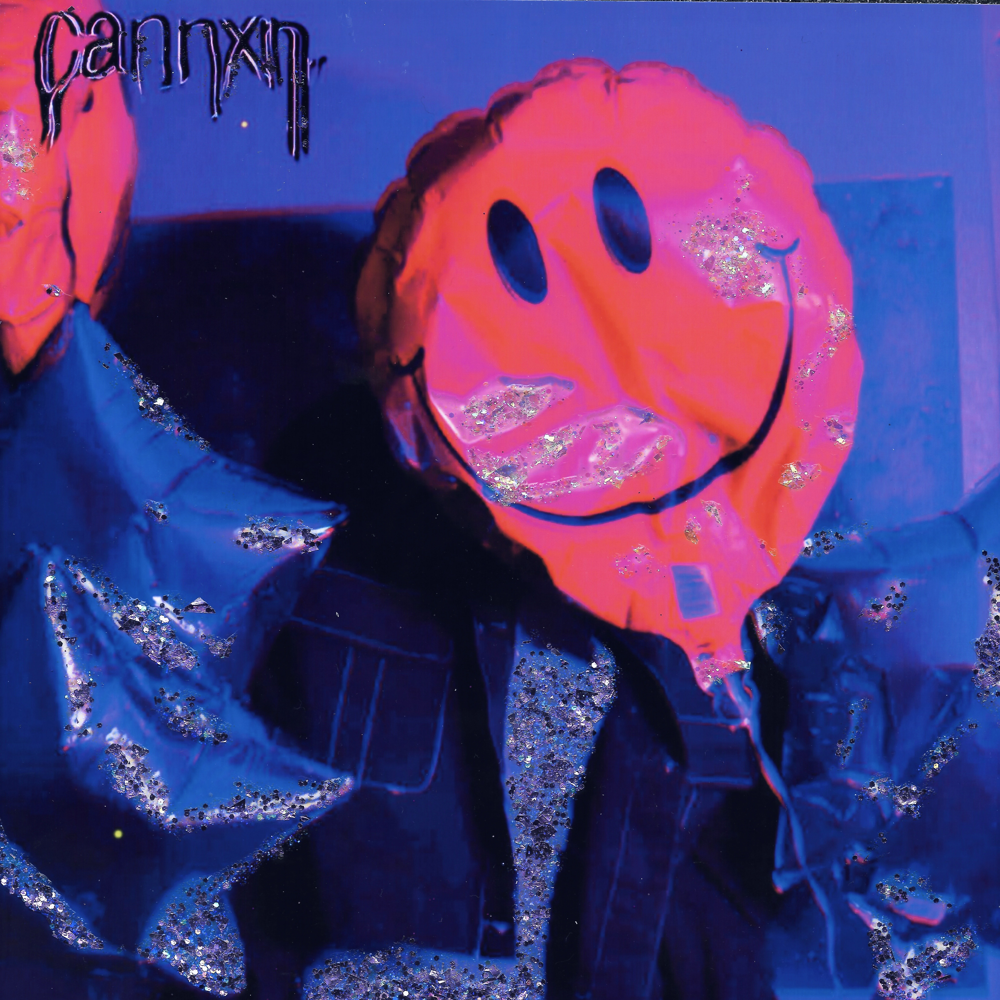

Will I Always Feel This Way EP, Released April 2021

Biography
A unique blend of sparkle and the familiar sounds of late 00’s pop headed
by Megan Cannon, CANNxN attempts to catch lightning in a bottle. First
surfacing as a solo project with a pair of singles in early 2020, CANNxN
went on to expand its roster and release EP Will I Always Feel This Way?
Synthy and Spacey, Will I Always Feel This Way exists somewhere between
organic and electronic. With more to come, CANNxN always has its sight
set on doing things bolder and brighter.